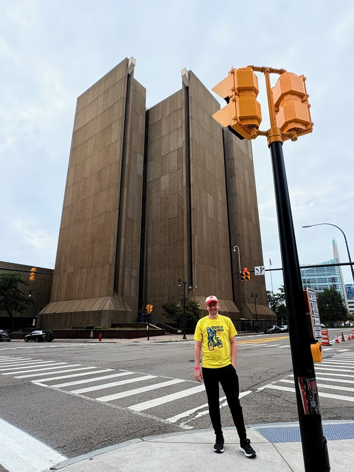
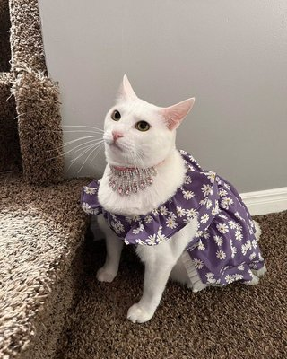

2026–
MSc, Computer Science (Computer Algebra)
University of Western Ontario. Thesis-based, in progress (expected 2028). Supervisor: M. Moreno Maza.

I am an MSc candidate in Computer Science at the University of Western Ontario, supervised by Professor Marc Moreno Maza and a member of the Ontario Research Centre for Computer Algebra (ORCCA). My research sits at the intersection of computer algebra and high performance computing: I design and implement efficient, parallel algorithms for combinatorial and algebraic problems. A large portion of my work focuses on graph algorithms and their generalizations, including hypergraphs, partially ordered sets, and matroids. I have contributed to related libraries in Maple, including Hypergraphs, PartiallyOrderedSets, and PolyhedralSets. I am also interested in the scholarship of teaching and learning, and I am developing my teaching practice through the Western Certificate in University Teaching and Learning. I completed my BSc (Honours Specialization in Computer Science) at Western in 2026, graduating with Distinction.
University of Western Ontario. Thesis-based, in progress (expected 2028). Supervisor: M. Moreno Maza.
University of Western Ontario. Thesis supervisor: M. Moreno Maza.
International Congress on Mathematical Software (ICMS 2026) Organizing Committee. Competitive; awarded to 24 of 40+ student-author applicants.
University of Western Ontario. Competitive.
Natural Sciences and Engineering Research Council of Canada. Competitive; held at Maplesoft.
University of Western Ontario. Summer 2023 and 2023–2024 Fall/Winter sessions.
A. M. Gale, M. Moreno Maza. International Congress on Mathematical Software (ICMS 2026), Lecture Notes in Computer Science, Springer.
PDF · Slides · Code (BPAS)
A. M. Gale, M. Moreno Maza, E. Postma. Software package released in Maple 2025 (Maplesoft).
Maple help: PartiallyOrderedSets · What's New in Maple 2025 · Feature overview (PDF)
A. M. Gale, C. Mukherjee, M. Moreno Maza. Software contribution released in Maple 2025 (Maplesoft).
Maple help: PolyhedralSets[Project] · Maple 2025 performance improvements
A. M. Gale, M. Moreno Maza, E. Postma, D. Quan. Software contribution released in Maple 2025 (Maplesoft).
Maple help: Hypergraphs[Transversal] · Hypergraphs package · Maple 2025 performance improvements
A. M. Gale. BSc thesis, Department of Computer Science, University of Western Ontario. Supervisor: M. Moreno Maza.
International Congress on Mathematical Software (ICMS 2026), session on High-Performance Computer Algebra, Waterloo, Ontario, July 2026.
Western University Research in Computer Science Conference (UWORCS 2026), London, Ontario, April 2026.
Western Undergraduate Summer Research Internship (USRI) Research Conference 2025, London, Ontario (virtual).
Western University Research in Computer Science Conference (UWORCS 2025), London, Ontario.
Directed Reading Program (DRP) Final Presentations, Winter 2024, Department of Mathematics, University of Western Ontario. Mentor: Ben Connors.
Directed Reading Program (DRP) Final Presentations, Fall 2023, Department of Mathematics, University of Western Ontario. Mentor: Javaad Akhtar.
International conference hosted by the Department of Computer Science, University of Western Ontario, London, Ontario, 22–24 July 2024.
May–August 2025. Developed C implementation techniques for divide-and-conquer computations of hypergraph transversals; presented at the USRI Research Conference.
September 2024–April 2025. Integrated the PartiallyOrderedSets package and C code for Hypergraphs[Transversal] and PolyhedralSets[Project] into Maple 2025.
May–August 2024. Co-developed the PartiallyOrderedSets package released in Maple 2025.
Optimized, parallel C implementations of Berge's divide-and-conquer algorithm and Eiter and Gottlob's completion algorithm for computing transversal hypergraphs, exploiting structure such as β-acyclicity, and integrated into Maple through an external library interface.
ICMS 2026 paper · BSc thesis · BPAS library · Maple Hypergraphs
Research collaboration between ORCCA and Maplesoft that transferred three software contributions into Maple 2025: the new PartiallyOrderedSets package, a C-accelerated Hypergraphs[Transversal] command, and an efficient redundant-constraint removal algorithm supporting PolyhedralSets[Project].
PartiallyOrderedSets · PolyhedralSets[Project] · New in Maple 2025
Undergraduate course (approx. 212 students), Department of Computer Science, University of Western Ontario. I hold 2 hours of weekly office hours.
Graduate teaching development program covering microteaching, pedagogy workshops, and a teaching dossier.
Two 10-minute micro-teaching lessons, Advanced Teaching Program (ATP) Microteaching, Centre for Teaching and Learning, Western University, 29 October and 12 November 2026. Delivered to small groups of graduate-student peers, each followed by peer and facilitator feedback.
Two 10-minute micro-teaching lessons, Teaching Assistant Training Program (TATP) Microteaching, Centre for Teaching and Learning, Western University, 12–13 September 2026. Delivered to small groups of graduate-student peers, each followed by peer and facilitator feedback.
Peer-support space for coursework help for Western Computer Science students (~4,800 members). Responsibilities include moderation, event planning, community building, and managing the server's bots.
married to my wonderfully supportive partner that has somehow tolerated my last-minute bugfixing allnighters for nearly the last decade. i love co-operative board games like Spirit Island, Gloomhaven, Pandemic, Hanabi, Sentinels of the Multiverse, Flash Point... i could go on. (i beg you, PLEASE hit me up if you want to play spirit island. i'm addicted. i'm currently working on beating all the adversaries at level 6! I LOVE THE THEME OF OCEAN'S HUNGRY GRASP). i spend my long bus rides doing word and logic puzzles (NYT Games, Minute Cryptic, Nonograms, Thinky Games...). when i've got free time at home, i also enjoy gaming, particularly "retro" games (i recently found out that gamecube games are now considered "retro", which immediately made me feel 1000 years old. what do you mean melee came out 25 years ago???), turn-based strategy (Troubleshooter:AC [i wish more people knew about this!], XCOM, Final Fantasy Tactics, Fell Seal...) or rogueli(k|t)es (Gunfire Reborn, Roboquest, Slay the Spire, too many to remember). i have a cat named Maestrood that flew all the way here from the philippines! :)

Email: agale9@uwo.ca
Office: Middlesex College, Room 327
Address: Department of Computer Science, University of Western Ontario, London, Ontario, Canada N6A 5B7
Google Scholar · ORCID · GitHub · ORCCA